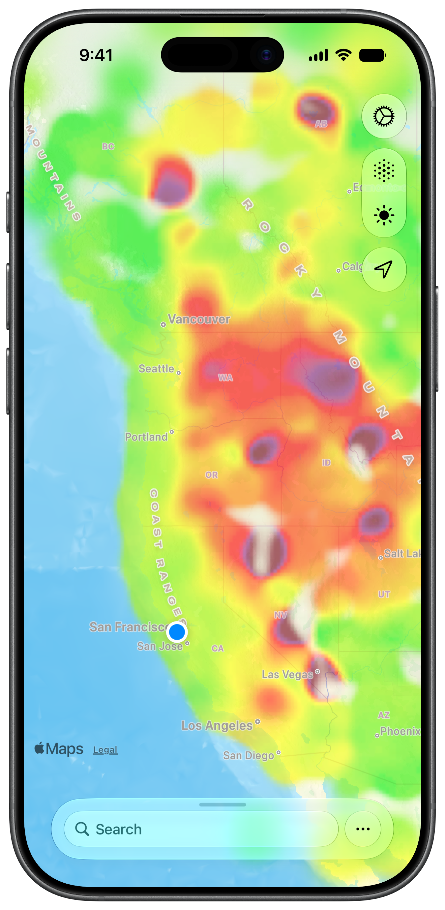
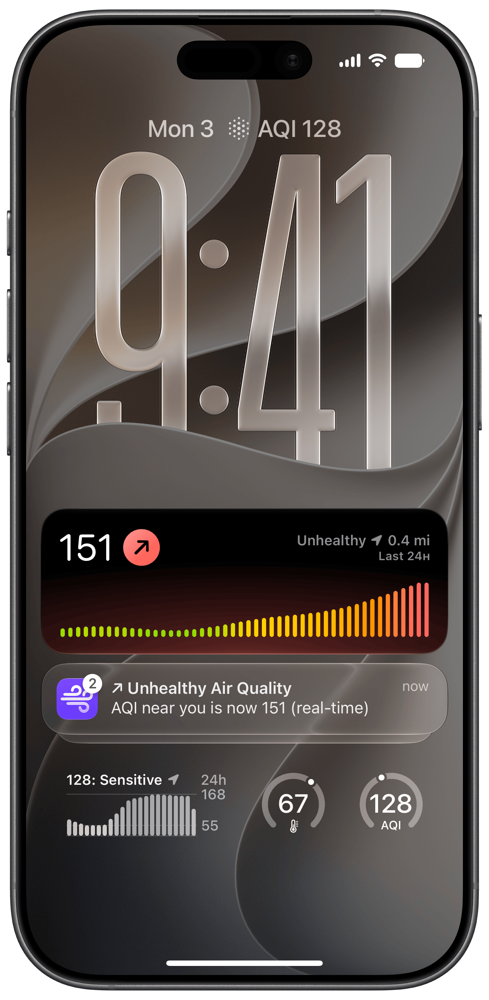
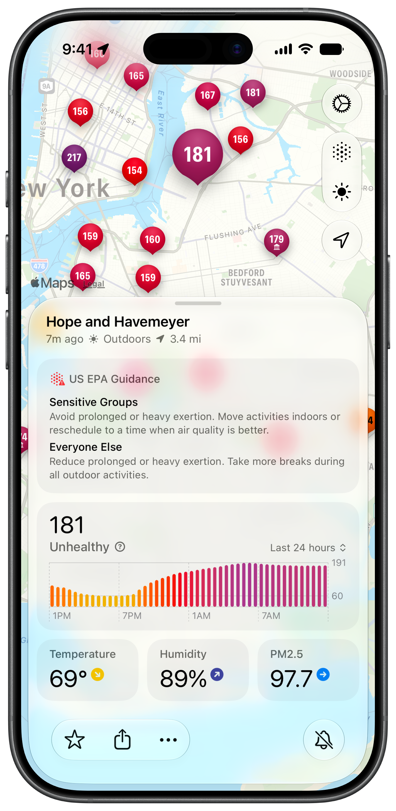

What is Paku?
tl;dr: Paku is a beautiful native air quality app for iPhone, iPad, Apple Watch, and Mac, powered by PurpleAir’s crowd-sourced network of air quality sensors.
Paku is built to help you monitor real-time air quality anywhere the PurpleAir network covers. PurpleAir sells affordable air quality sensors that anyone can set up, and has a huge network of crowd-sourced air quality data — but no app of its own.
As a native app, Paku is much faster than accessing PurpleAir on the web, and offers features the website can’t: widgets, Live Activities, push notifications, and more.
Fact Sheet
- App name: Paku for PurpleAir
- Developer: Kyle Bashour (Pitou Technologies, LLC)
- Platforms: iPhone, iPad, Apple Watch, and Mac
- Initial release: September 2020
- Latest release: Paku 7 (2026)
- Price: Free download; Paku Pro is $1.99/month, $13.99/year (1 week free trial), or $89.99 lifetime
- App Store rating: 4.7 stars across 11,000+ ratings
- Download: On the App Store
- Website: paku.app
- Press contact: support@paku.app
What’s new in Paku 7
The latest update, Paku 7, is headlined by a new heatmap, redesigned Live Activities, and multi-pollutant readings from AirNow sites.
- Heatmap: readings blend into a heatmap layer as you zoom out, making it easy to understand air quality across a large area at a glance.
- Redesigned Live Activities: a new history chart, push-to-start when AQI crosses your threshold, and server-side updates — so they stay fresh even after the app is closed, and follow the nearest sensor as you move.
- AirNow, in full: government AirNow sites now show PM2.5, PM10, and ozone readings, with a full detail sheet with per-pollutant readings and EPA guidance.
- Redesigned sensor details: a new bottom toolbar, distance to the sensor, and improved charts that keep spikes visible instead of smoothing them out.
- Accessibility: greatly improved VoiceOver and Dynamic Type support, map markers that grow with your text size, and Voice Control navigation by sensor or place name.
- Paku gives back: starting with this release, at least 15% of Paku’s monthly recurring revenue is donated each month to an organization fighting climate change or reducing the impact of wildfires. Every donation is listed publicly with a receipt, and revenue is independently verifiable — see the Giving page for details.



Media Assets
- App screenshots — framed and unframed, in light and dark mode
- App icon — 1024×1024 PNG
- Need something else? Just ask
{kind=link}
Core Product Features
- Real-time map of PurpleAir sensors and government AirNow sites.
- Heatmap layer for understanding air quality across large areas. (New in Paku 7)
- View AQI, temperature, humidity, or raw particulate values.
- Gorgeous charts with a week of historical data for all measurements.
- Use favorites to quickly check multiple sensors.
- Favorites and settings sync between devices through iCloud.
- Check the AQI with Siri and Shortcuts.
- Pro Monitor AQI with Live Activities.
- Pro Choose from several alternate app icons.
- Several configurable widgets.
- Pro ‘Chart’ widget that can show any measurement Paku supports.
- ‘Big Stat’ widget for easy glanceability.
- ‘Air Quality’ widget with an AQI gauge.
- ‘EPA Color’ widget with a vivid AQI color.
- Widgets can show the nearest sensor or a specific sensor.
- Smart Select chooses the nearest accurate sensor to display.
- Widgets support:
- iOS and iPadOS Home Screen and Lock Screen.
- StandBy on iPhone.
- Apple Watch complications and Smart Stack.
- Mac Desktop and Notification Center.
- Pro AQI Alerts provide real-time air quality notifications.
- Nearby Alerts automatically follow the best sensor near you as you move around.
- Configure alerts for sensors to be notified when the AQI crosses a specified threshold.
- Improvement Alerts notify you when the AQI has improved under your threshold.
- Pro Add private sensors.
- Keep your sensor private and view it in Paku.
- See it on the map, and use it in widgets or alerts.
- Pro Details:
- Unlock AQI Alerts, Nearby Alerts, Live Activities, private sensors, chart widgets, and alternate app icons.
- $1.99/month, $13.99/year (1 week free trial), $89.99 lifetime.
Existing Coverage
- Apple: How Paku on Apple Watch helps people breathe easy
- The Washington Post: Best apps to check air quality near you
- MacStories: Hyper-Local Air Quality Tracking on Every Apple Platform
- Six Colors: Getting a handle on outdoor air quality
- Mashable: How to check the air quality near you
- PurpleAir Blog: The Paku App: View PurpleAir Air Quality Data
Who makes Paku?
Paku was created by Pitou Technologies, LLC, a one-person venture from Kyle Bashour. Kyle is available for interviews, and happy to provide additional assets or details on request.
If you’re writing about Paku, you can request a promo code, or get in touch with any questions.